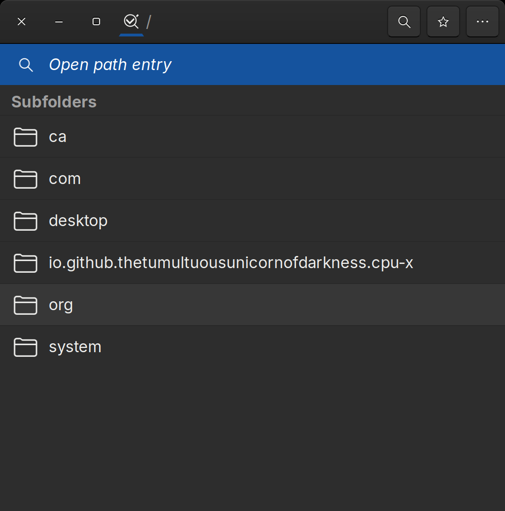
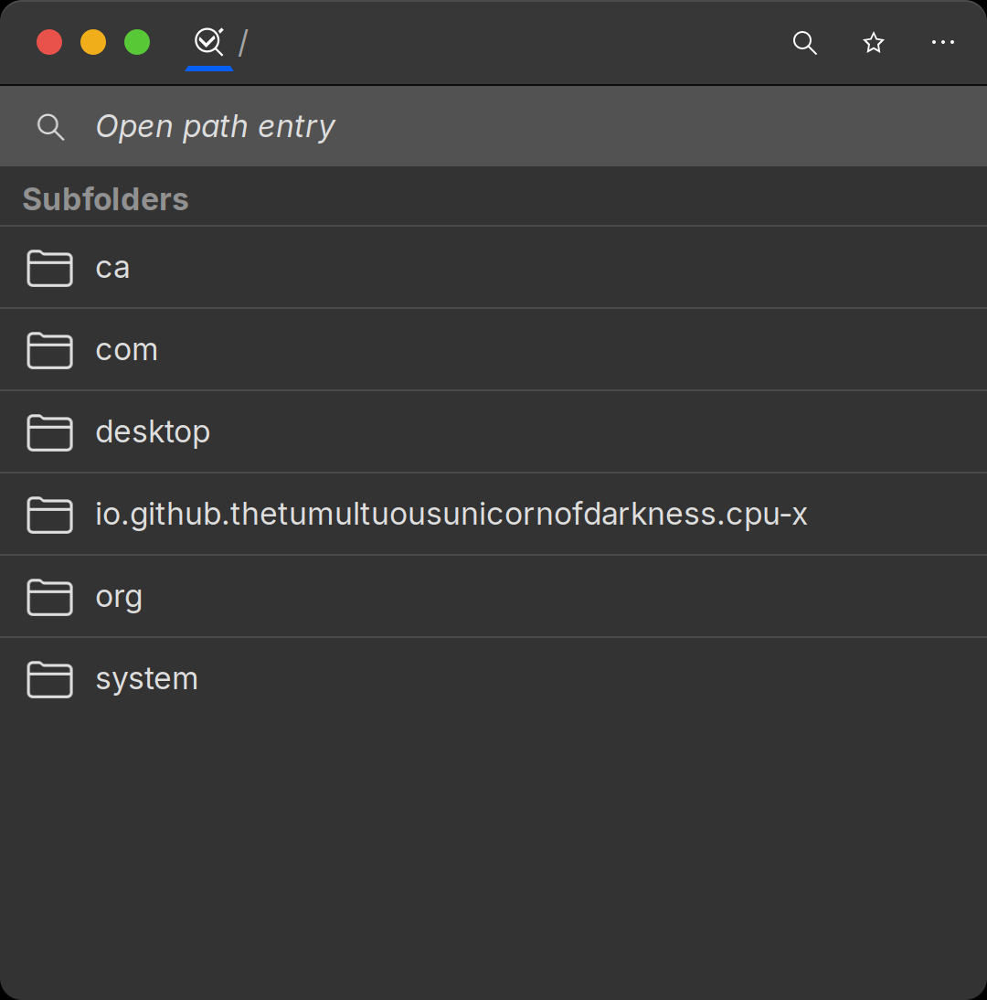
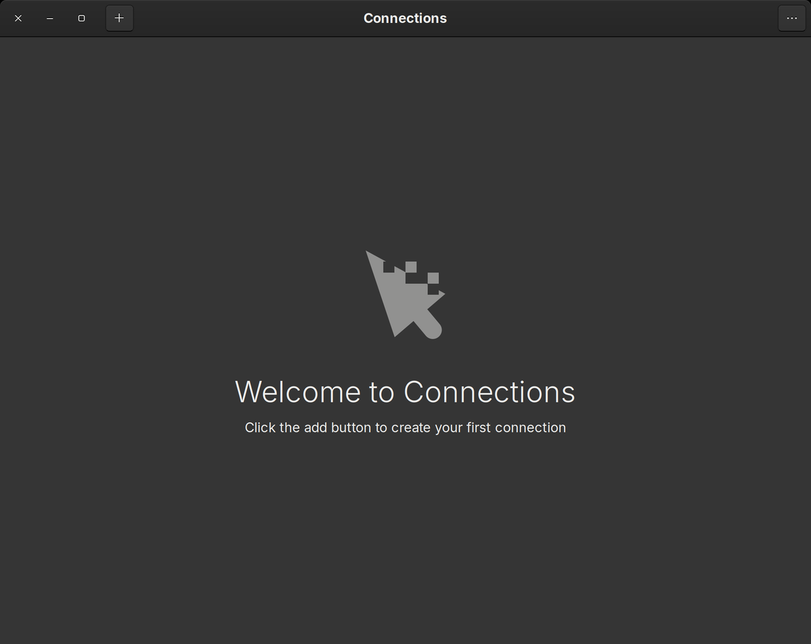
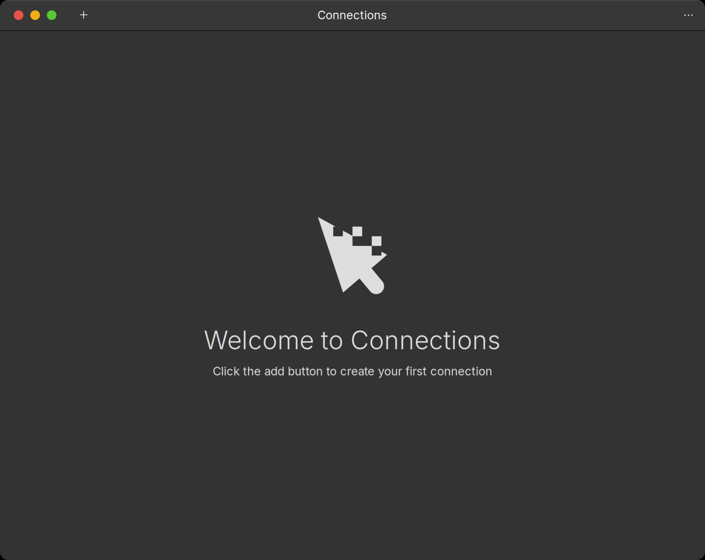

00 Preflight
Backs up your entire dconf, then prints a hardware and thermal baseline. Run it first so you can always get back.
Fedora 44 · GNOME 50 · Wayland
Ten scripts for a Fedora GNOME workstation — the macOS look and feel, macOS-style shortcuts, a natural text-to-speech voice, and the performance fix that mattered more than all the theming put together.
idempotent reversible MIT tested on 1 machine
git clone https://github.com/Wosmos/fedora-mac
cd fedora-mac/scripts && bash install.sh
Runs as your normal user and calls sudo only where noted. Backs up your entire dconf first.
01 — The point
The machine was being throttled by its own CPU governor. A performance
governor on a 15 W laptop chip: it sprinted to maximum turbo for
trivial work, exceeded its thermal headroom in milliseconds, got cut by PROCHOT,
and repeated — thousands of times a second.
27%
before
0%
after
of wall-clock time spent thermally throttled, measured at idle
Dell Latitude 5400, i7-8665U, UHD 620. No hardware was changed.
sensors every two
seconds showed a comfortable 61–68 °C while the CPU was throttling a quarter of the
time — the samples were landing in the valleys between millisecond spikes. Read the
cumulative counters in /sys/devices/system/cpu/cpu0/thermal_throttle/ instead.
02 — Seen side by side
Drag the handle, or focus it and use the arrow keys.


stock after

stock afterAdwaita:dark and once with WhiteSur — and captured
window-by-window. Nothing is mocked up or borrowed. GTK3 applications are used
because GTK4/libadwaita apps ignore GTK_THEME entirely, so they
cannot show a stock-versus-themed comparison at all.
03 — What runs
Numbered, ordered, independently runnable. Every one is safe to run twice.
Backs up your entire dconf, then prints a hardware and thermal baseline. Run it first so you can always get back.
The one that matters. Removes forced-performance tuning, restores power-profiles-daemon, sets a sane governor and energy policy.
dnf speed config, RPM Fusion, full ffmpeg, hardware video decode, backup tooling.
WhiteSur GTK, shell, icons and cursors. Inter and JetBrains Mono. Wallpaper and macOS system sounds.
Twelve GNOME extensions from extensions.gnome.org, tuned for a weak integrated GPU.
macOS-style keybindings using nothing but GNOME settings. No daemon required.
Optional. Super becomes Cmd in every application — without breaking Ctrl+C in your terminal.
Replaces robotic espeak-ng with Piper neural TTS, entirely inside your home directory.
btrfs safety net via snapper, wired into dnf so every transaction is undoable.
Read-only end-to-end check. Tells you what actually took, and what silently didn’t.
04 — The nitty gritty
Measured values from the reference machine, not aspirations.
| Setting | Stock / broken | After |
|---|---|---|
| scaling_governor | performance | powersave |
| energy_performance_preference | performance | balance_performance |
| power-profiles-daemon | masked | active, pinned to balanced |
| tuned | active, fighting ppd | disabled |
| vm.swappiness (with zram) | 10 | 150 |
| Battery charge ceiling | none | 80% |
| Throttle events per boot | 24,440 | 0 |
| Setting | Stock | After |
|---|---|---|
| GTK theme | Adwaita | WhiteSur-Dark |
| Shell theme | none (stock top bar) | WhiteSur-Dark |
| Interface font | Adwaita Sans / Cantarell | Inter |
| Monospace font | Adwaita Mono | JetBrains Mono Nerd Font |
| Window controls | right | left, macOS order |
| Display scaling | 1.25× fractional | 100% + 1.15 text scale |
| System sounds | freedesktop | macOS Big Sur, 44 events |
| Panel blur | live, sigma 15 | static, sigma 10 |
| Setting | Stock | After |
|---|---|---|
| Text-to-speech engine | espeak-ng (formant) | Piper neural |
| Clipboard history | none | 50 items, searchable |
| btrfs snapshots | none | snapper + dnf hook |
| dnf parallel downloads | unset (empty dnf.conf) | 10, fastest mirror |
| Quick Look preview | none | sushi, spacebar in Files |
05 — The clever bit
Remappers normally turn Super+C into Ctrl+C, which in a terminal is SIGINT. You end up choosing between copy and interrupt. The way out is to never send Ctrl+C at all.
XF86Copy, XF86Paste, XF86Cut — not Ctrl combinations.
GTK and Qt already understand those keys as clipboard actions. Nothing to configure.
It is never transmitted, so interrupt keeps working exactly as before.
06 — Muscle memory
These need no daemon — plain GNOME settings, set by script 05.
| Shift Super 3 / 4 / 5 | Screenshot: full screen, region, region |
| Ctrl ↑ | Mission Control |
| Super Space | Spotlight |
| Ctrl ← / → | Switch Spaces |
| Ctrl Super arrows | Tile and maximize |
| Ctrl Alt V | Clipboard history — 50 items, searchable |
| Super C / V / X | Copy, paste, cut — everywhere (with keyd) |
| Backspace Esc Enter | Panic key — kills keyd instantly |
07 — Hard-won
All written up properly, with the diagnosis that actually worked.
A GNOME extension can sit in the enabled list reporting OUT OF DATE and silently never load. Check State, not the list.
Omitting a key from a compound layer doesn’t pass it through — it falls back to the parent layer and fires the wrong thing.
keyd check reports success as “No errors found.” A naive grep marks a valid config broken.
piperThe piper package in Fedora’s repos is a gaming-mouse tool. Piper TTS isn’t packaged for Fedora at all.
pkill -f kills youpkill -f speech-dispatcher matches the calling shell’s own command line and ends your session.
It renders large and downscales every frame. 100% plus text scaling looks identical and is free.